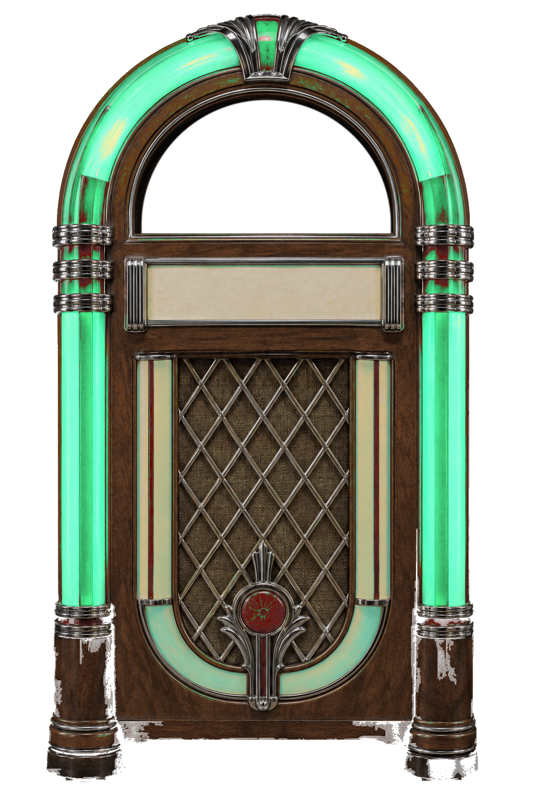
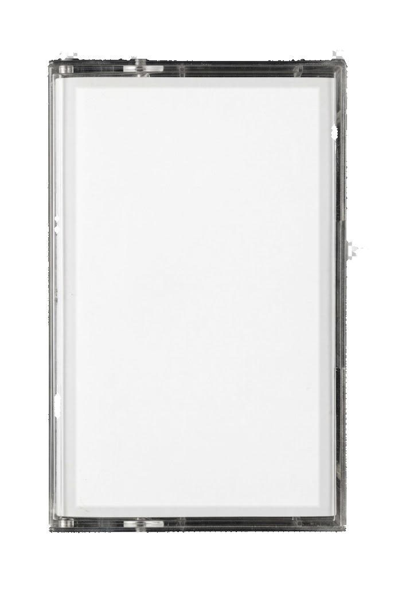
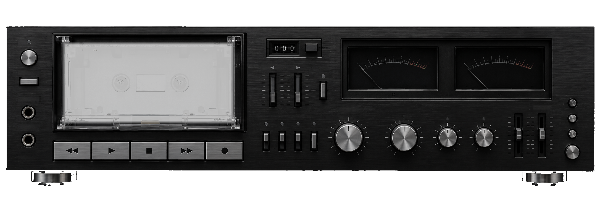
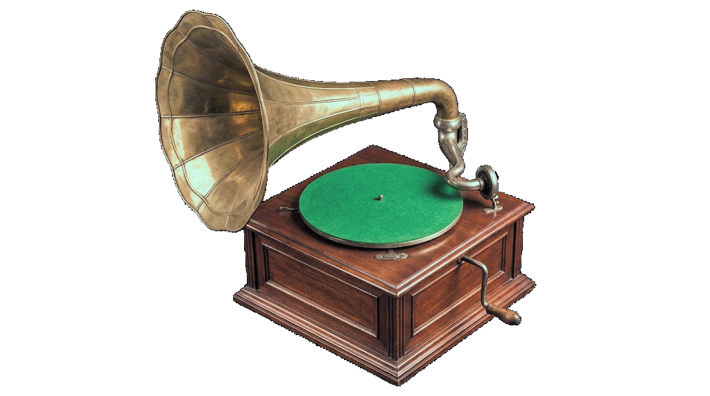

Trovador
Comprobando herramientas...
Ajustes
Trabajos
Nada por ahora.
Descargas recientes
- Carpeta vacía.
Elige una carpeta con discos dentro.
Duplicados
Renombrar carpetas
Ordenar por artista
Llevarse discos
(elige la carpeta: el USB del coche)
Disco
Ficheros
Edición
Mejorar calidad desde Soulseek
Completar el álbum
Registro
…
Descargas
Ninguna descarga.
Leyendo la colección…

––
Marca discos con ♥ y aparecerán aquí.
Ninguna cinta.

Arrastra la portada para encuadrarla en la cartulina y acércala con la rueda o el deslizador. Lo que se vea ahí es lo que sale en la caja y en la etiqueta de la cinta.

000
Ningún disco.

Ningún disco.
♪